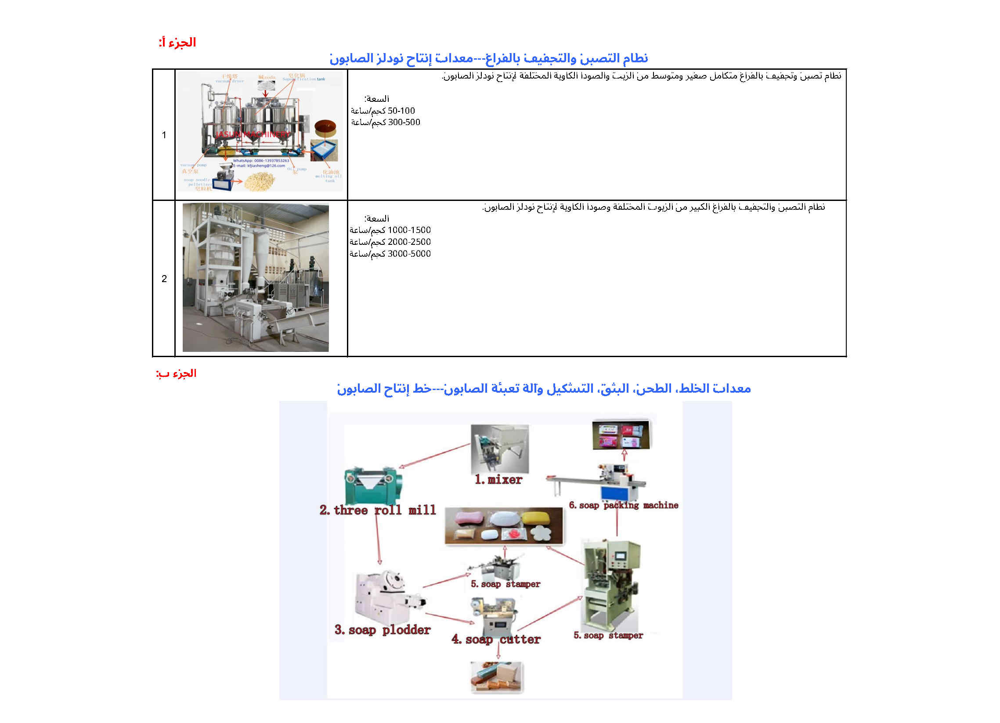

مصنع موثوق لآلات تصنيع الصابون الصناعي
تأسست شركة Kaifeng Jasun Industry Co., Ltd. في عام 2005، وهي متخصصة في آلات تصنيع الصابون المهنية وخطوط الإنتاج الكاملة. مع أكثر من عقدين من الخبرة الصناعية، نحن ملتزمون بتزويد مصنعي الصابون العالميين بآلات معالجة الصابون عالية الأداء بدءًا من التصبن وحتى التغليف النهائي للصابون. تم تصدير أجهزتنا إلى أكثر من 50 دولة ومنطقة، بما في ذلك الدول المتقدمة مثل الولايات المتحدة الأمريكية.





اتصل بفريق الهندسة لدينا للحصول على عرض أسعار مجاني
تواصل مع فريقنا الهندسي مباشرة عبر WhatsApp أو البريد الإلكتروني لمعرفة الأسعار والمواصفات الفنية.
💬 الدردشة عبر WhatsApp ✉ البريد الإلكتروني: jasunmachinery@gmail.com